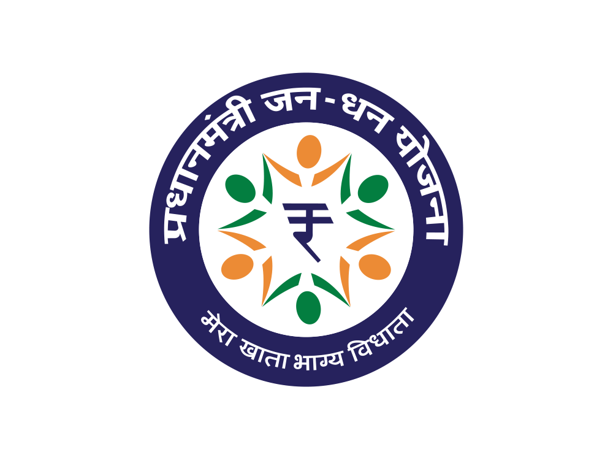
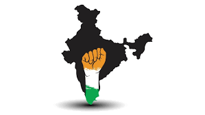
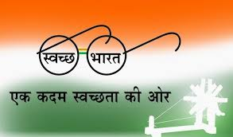

Narendra Modi, born on September 17, 1950, in Vadnagar, Gujarat, India, rose from
humble beginnings as the
son of a tea seller to become one of India's most prominent political figures.
His
journey into politics began
with the Rashtriya Swayamsevak Sangh (RSS), a Hindu nationalist
organization,
where he served in various
roles before joining the Bharatiya Janata Party (BJP). Modi's leadership in
Gujarat as Chief Minister from 2001
to 2014 garnered attention for his focus on economic development and
infrastructural growth, although his
tenure was not without controversy, notably the Gujarat riots of
2002.
In 2014, Narendra Modi led the BJP to
a historic victory in the general elections, becoming the Prime
Minister of India. His tenure has been character-
ized by ambitious economic reforms, initiatives such as
Make
in India and Digital India, as well as efforts to strengthen India's position on the global stage.
Throughout his career, Modi has remained a polarizing figure, admired for his decisive leadership and
criticized for his handling of issues such as religious and social tensio-
ns.
Policy Initiatives
Pradhan Mantri Jan Dhan Yojana (PMJDY)
Launched in 2014, PMJDY is a landmark financial inclusion initiative by Prime Minister Narendra Modi's
government. It aims to provide banking services to the unbanked, especially in rural and underprivileged
areas. PMJDY has successfully integrated millions into the formal banking system, facilitating access to
credit, insurance, and direct benefit transfers.

Ayushman Bharat
Introduced in 2018, Ayushman Bharat, or "Modicare," is among the world's largest healthcare schemes. It
offers health insurance coverage to over 500 million vulnerable individuals and families in India,
addressing financial barriers to healthcare. Ayushman Bharat ensures cashless access to secondary and
tertiary medical treatments, contributing significantly to universal health coverage.
Atmanirbhar Bharat (Self-Reliant India)
Atmanirbhar Bharat, announced in 2020, is an economic stimulus and self-reliance initiative in response to
the COVID-19 pandemic. It focuses on promoting indigenous production, reducing import dependency, and
fostering innovation and entrepreneurship to build a resilient economy.

Swachh Bharat Abhiyan (Clean India Mission)
Launched in 2014, Swachh Bharat Abhiyan is a nationwide cleanliness campaign led by Prime Minister Narendra
Modi. It aims to achieve universal sanitation coverage and eliminate open defecation. Through infrastructure
development and behavior change campaigns, the initiative promotes cleanliness, hygiene, and waste
management.

Digital India
Digital India, initiated in 2015, is a transformative effort to leverage digital technologies for citizen
empowerment and inclusive growth. It bridges the digital divide by enhancing access to digital services and
infrastructure, fostering financial inclusion, and driving India's digital transformation.